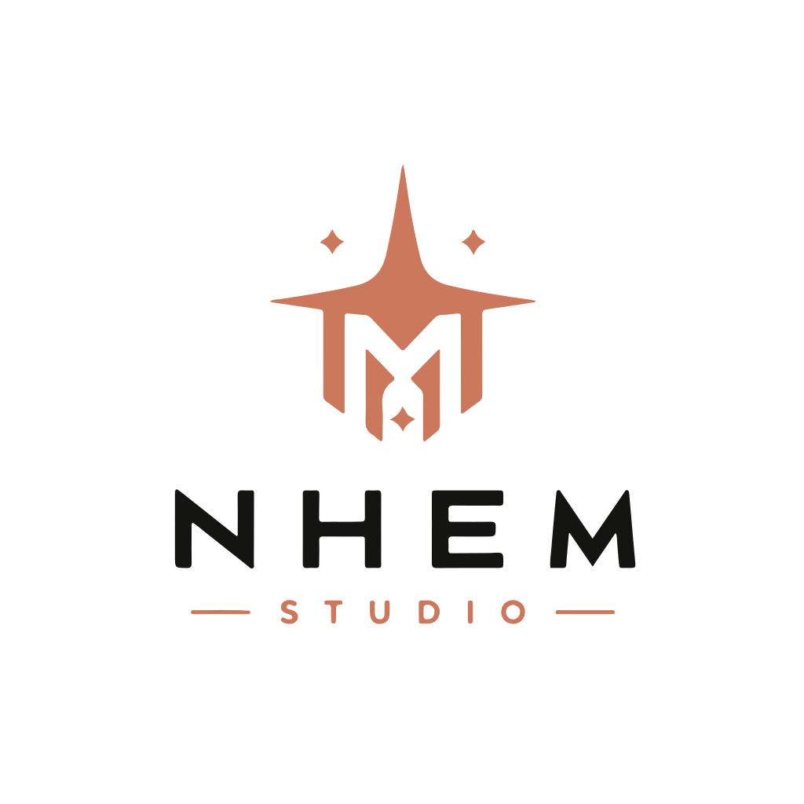

NhemDangFugBixs.ToolingCompile-time DI safety for Unity projects.
Attribute-driven VContainer workflow toolkit with source generation, analyzer guardrails, and architecture-aware reporting.

NhemDangFugBixs.ToolingAttribute-driven VContainer workflow toolkit with source generation, analyzer guardrails, and architecture-aware reporting.